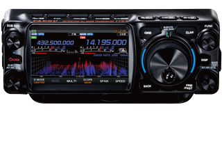
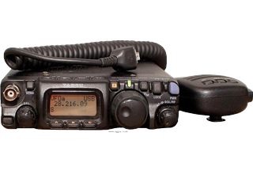
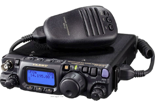
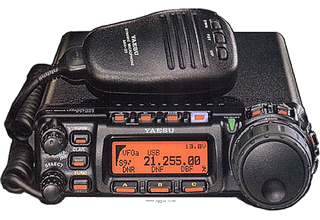
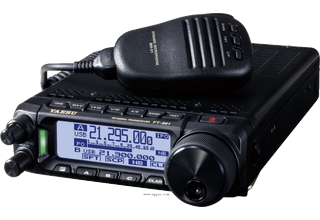
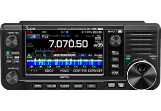
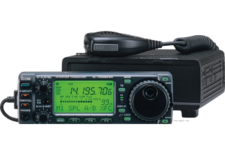
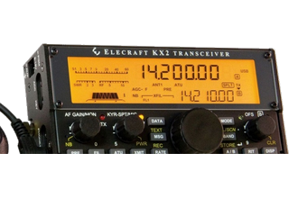

Greyline FT8 does not use CAT/CI-V control or send any serial commands. This is an iOS limitation, not a design choice in the app. Any Apple device can communicate with your radio using audio input/output only. The only thing your radio needs to support is VOX activation over the line you use to connect.
Below are some popular field radios that have been tested with the app and how you can connect them.

Fully supported on Apple devices with a USB-C port. Use a direct USB-C to USB-C cable. If your Apple device has a Lightning port, you may need to use a Lightning → TRRS adapter, and build a cable that supports the 6-pin modular microphone and standard 3.5mm headphone jack.

This radio does not support VOX activation over the audio line. Workarounds may be possible but have not been tested, and so this radio is not recommended.

Fully supported, using a Digirig or other audio interface. Connect the Digirig audio line to a Lightning or USB-C to TRRS adapter. Do not connect the Serial line if your interface has one.

Fully supported, using a Digirig or other audio interface. Connect the Digirig audio line to a Lightning or USB-C to TRRS adapter. Do not connect the Serial line if your interface has one.

Fully supported, using a Digirig or other audio interface. Connect the Digirig audio line to a Lightning or USB-C to TRRS adapter. Do not connect the Serial line if your interface has one.

Fully supported, when using a USB-C or Lightning → TRRS adapter and a splitter to 2.5mm TRS for Microphone and 3.5mm TRS for Headphones. Icom does not support VOX over USB on this radio, so a direct USB interface will not work properly.

Fully supported, using a Digirig or other audio interface. Connect the Digirig audio line to a Lightning or USB-C to TRRS adapter. Do not connect the Serial line if your interface has one.

Fully supported, when using a USB-C or Lightning → TRRS adapter and a splitter to 3.5mm TRS for Microphone and Headphones. You can also use a Digirig or other audio interface.Do not connect the Serial line if your interface has one.
When using the direct audio connections, always connect the Microphone port on your radio to the Headphone input on your Apple device, and the Headphone port on your radio to the Microphone input on your Apple device. Sounds backwards, but you want output ↔ input.
These are examples of connectors you can purchase from reputable retailers that will help get you started. These are not affiliate links and Greyline FT8 does not receive any commission on them, they are just known working parts.